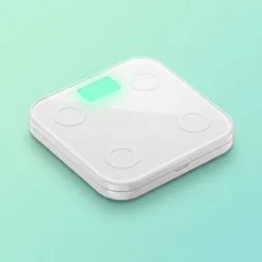
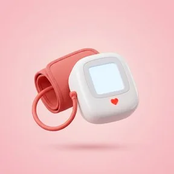
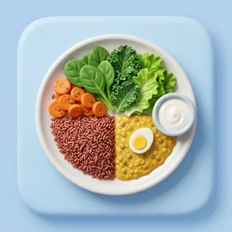
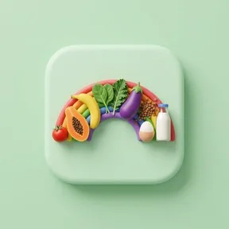

Log it in one tap
Your water target comes from your weight. Add a glass with one tap, and on hot days VitalU suggests a little more.
VitalU is a private health companion for university students in Sri Lanka. Log water, meals, sleep and stress in a tap or two, understand your own numbers, and reach campus support when you need it.
Free for students. On iPhone, open the web app in Safari.
Your water target comes from your weight. Add a glass with one tap, and on hot days VitalU suggests a little more.
Photograph your rice and curry. VitalU estimates the calories, the macros and which food groups the plate covers.
Upload a lab report and see each value next to its normal range, with a plain-English note. It explains; it does not diagnose.
Small tools a busy student actually uses, built around Sri Lankan food, rupee budgets and campus life.
A daily target from your weight, quick-add glasses and tips on hot days.
Counts steps on your phone and compares your week with 150 active minutes.
Log bedtime, wake time and how rested you feel, and see the week’s pattern.
Weekly trends for every habit, gentle milestones and a PDF summary.

Your numbers on a clear scale, with a healthy weight range for you.

A factor-based check pre-filled from your profile, with advice at every level.
Upload a lab report and get each value explained in plain English.
A short wellness assessment each term on food, sleep, activity and stress.
Photograph a meal and VitalU estimates the dish, calories and macros.

Half vegetables, a quarter grains, a quarter protein, shown with local foods.

Tick off the 8 food groups you ate today and see where your plate is thin.
Plan a week of meals in rupees and share the grocery list with housemates.
The DASS-21 self-check, with calming ideas matched to your results.
Find campus health professionals and ask a question without your name.
Call a Sri Lankan help line straight from the app, or ask the campus health centre a question without giving your name. A professional replies.
VitalU keeps your records private by default and tells you plainly what happens with them.
Every log, result and report is locked to your account. No other student, lecturer or administrator can open it.
With your consent, term check-ins are pooled by faculty for planning. Groups smaller than five are never shown.
VitalU explains your numbers and points you to real help. It does not replace a doctor.
Your question may already be answered here. If not, start the app and look around; it takes a minute to sign up.
Yes. VitalU is free for students, on Android and in the browser.
Only you. Your logs, results and reports are locked to your account, and nobody else at the university can open them.
No. Blood report and meal analyses are there to help you understand your numbers. For anything that worries you, talk to a doctor or the campus health centre.
Tap Download for Android and open the downloaded APK. If your phone asks, allow installs from your browser.
Yes. Open the web app in Safari, sign in, then tap Share and choose Add to Home Screen to keep it one tap away.
Call 1990 for a free Suwa Seriya ambulance, 1926 for the NIMH mental health helpline, or 1333 for CCCline.